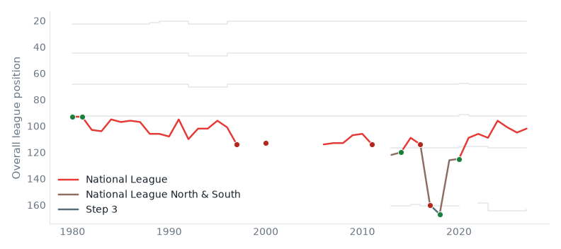

Who each club is fighting for. 23 September 2026.
Local authorities with the most people living further than twenty miles from any club in the top five divisions.
| Local authority | Beyond 20 miles | Of | Furthest | Nearest club | |
|---|---|---|---|---|---|
| 1 | Cornwall | 476,163 | 583,289 | 70.0 mi | Plymouth Argyle |
| 2 | Wiltshire | 231,137 | 523,700 | 27.3 mi | Bristol City |
| 3 | North Yorkshire | 185,927 | 635,270 | 33.3 mi | York City |
| 4 | Herefordshire | 164,213 | 191,047 | 35.1 mi | Kidderminster Harriers |
| 5 | Thanet | 142,691 | 142,691 | 34.3 mi | Southend United |
| 6 | Canterbury | 139,041 | 162,100 | 27.1 mi | Gillingham |
| 7 | King's Lynn and West Norfolk | 138,094 | 156,206 | 29.9 mi | Boston United |
| 8 | Cumberland | 129,682 | 280,495 | 33.7 mi | Carlisle United |
| 9 | Ashford | 125,490 | 140,936 | 25.4 mi | Gillingham |
| 10 | Dover | 119,768 | 119,768 | 38.4 mi | Gillingham |
Altrincham play in the National League, at Moss Lane.
The catchment model gives them 70,269 people to draw on, the 107th largest catchment of the 112 clubs in the top five divisions; by league position they are 98th.
The nearest club is Manchester United (Premier League), 5.9 miles away.
85% of the people nearest to them go elsewhere.
Altrincham belong in the National League — 71% of their 48 recorded seasons.

Modelled, not counted: population is split across every club by distance and by level, not assigned to the nearest one. How catchment is measured · catchment · contested.
Built from the English football database, tiers 1–5 from 1958/59. Results from football-data.co.uk. Archived copy.